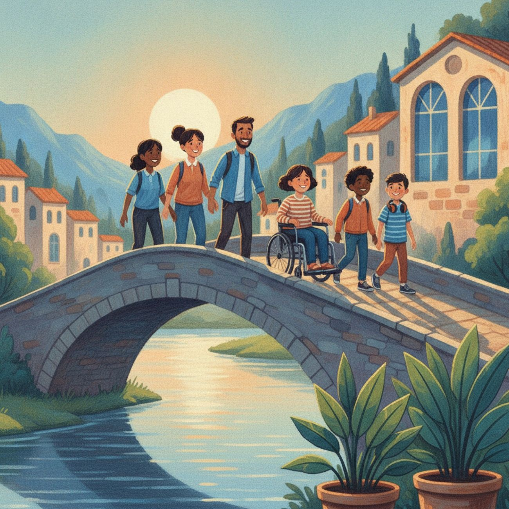
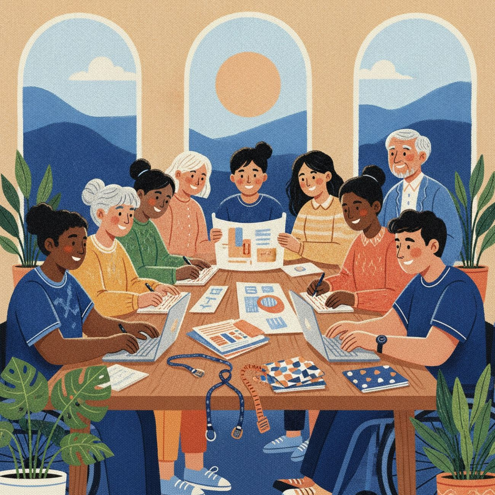
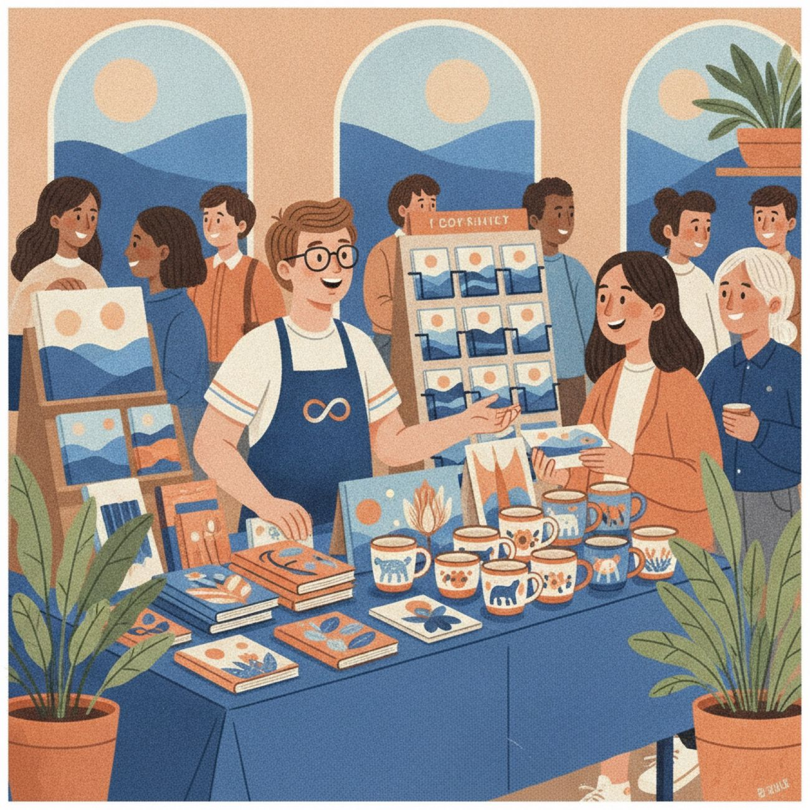
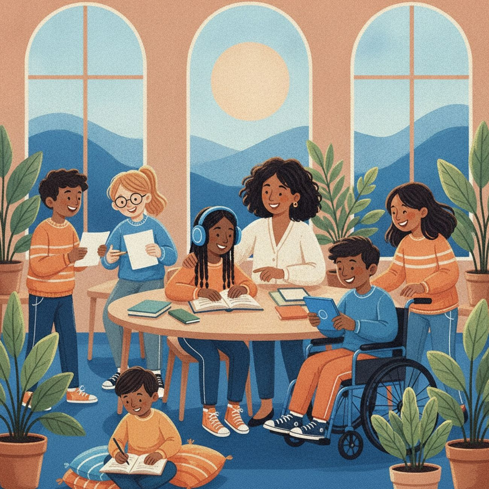
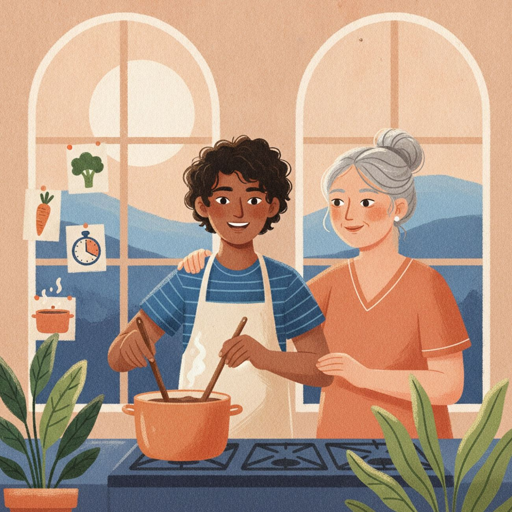
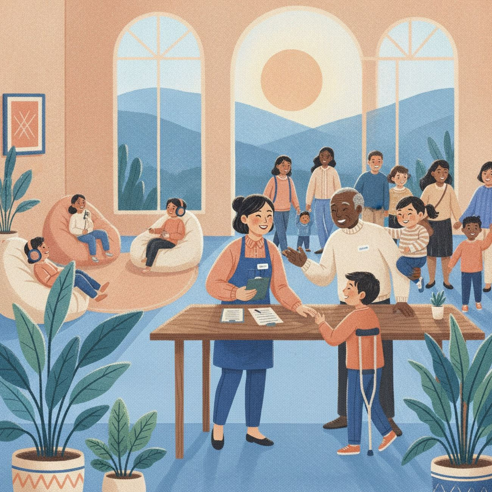

让理解，成为参与的开始 Let understanding be where belonging begins
一个由美国高中生发起的自闭症社群：可信的知识、具体的志愿任务，以及来源透明的创作者作品。 An autism community started by a U.S. high-school student: trustworthy information, concrete ways to help, and transparently sourced creator work.

每个人都可以从一件具体的小事开始Everyone can start with one concrete, small step

了解自闭症Understand autism
来源核验的基础知识，与更尊重的沟通方式。Source-checked basics and more respectful ways to communicate.
进入知识栏目Start reading
02参与志愿服务Volunteer
线上或线下的小任务，有清楚边界与成人监督。Small online or in-person tasks, with clear boundaries.
查看岗位See roles
03支持创作者Support creators
认识作品背后的人，收入去向公开透明。Meet the makers; see exactly where the money goes.
认识创作者Meet creators
寻找实用资源Find practical resources
教育、就业与家庭支持，直达官方入口。Education, work and family support — straight to official sources.
数字，需要放回背景里理解Numbers only mean something in context
自闭症（ASD）是一种神经与发育差异。之所以叫谱系，是因为每个人的特点和支持需要都不同。Autism (ASD) is a neurological and developmental difference. It's a spectrum because every person's traits and needs differ.
在美国 16 个监测地区中，约每 31 名 8 岁儿童中有 1 名被识别为 ASD。In 16 U.S. monitoring sites, about 1 in 31 eight-year-olds was identified with ASD.
来源：美国疾控中心 ADDM 监测网络 · 不是全美儿童的普查结果Source: CDC ADDM Network · not a census of all U.S. children世界卫生组织估计，2021 年全球约每 127 人中有 1 名自闭症人士。The World Health Organization estimates that in 2021 about 1 in 127 people worldwide was autistic.
来源：世界卫生组织自闭症资料 · 全年龄段全球估计Source: WHO autism fact sheet · global, all ages为什么不一样？两个数字的人群、年龄和统计方法不同，不能直接比较；1/31 也不是任何人的个人概率。Why different? Different populations, ages and methods — they can't be compared, and 1 in 31 is no one's personal probability.
联合国世界自闭症关注日。倡议已从“了解”走向接纳、尊重与平等参与。UN World Autism Awareness Day — moving from awareness to acceptance, respect and inclusion.
谱系不是一条从“轻”到“重”的直线The spectrum isn't a line from “mild” to “severe”
它是特征与支持需要的不同组合，能力与困难常常同时存在。It's different combinations of traits and needs — strengths and difficulties side by side.
阅读《认识自闭症谱系》Read “The spectrum has no single shape”从观察差异，到获得支持From noticing differences to getting support
理解行为背后的需要，更早为成年生活做准备Understand the need behind the behaviour — and plan early for adult life
六篇实践文章，每篇附带马上能用的小工具。Six practical articles, each with a tool you can use today.

我们最近在读、在写、在关注的What we're reading, writing and following

现在就可以加入Join in now
我们公开每一项进展，只展示真实、可核验的数据。We share every step openly — with real, verifiable numbers only.
已发布双语文章Bilingual articles published
中英双语，持续更新In Chinese and English, always growing
首轮志愿者招募First volunteer round
资料核验、翻译、设计和无障碍测试Fact-checking, translation, design, accessibility testing
社群创作者征集Call for creators
公开授权、定价与收入分配规则Open rules on consent, pricing and revenue
资源库Resource library
教育、就业与家庭支持官方入口Official education, work and family links

一个更包容的社群，不要求所有人用同一种方式出现An inclusive community doesn't ask everyone to show up the same way
研究、翻译、设计、技术或活动组织——总有一个适合你的小任务。Research, translation, design, tech or events — there's a task for you.